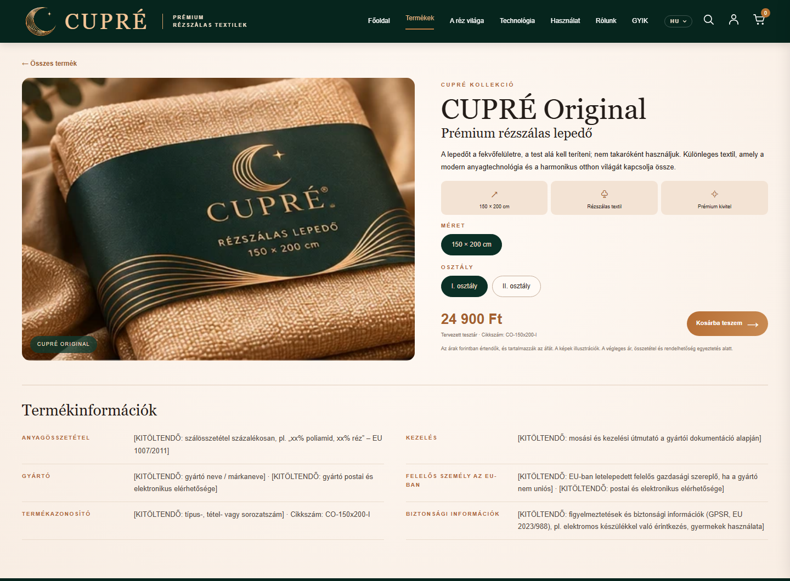
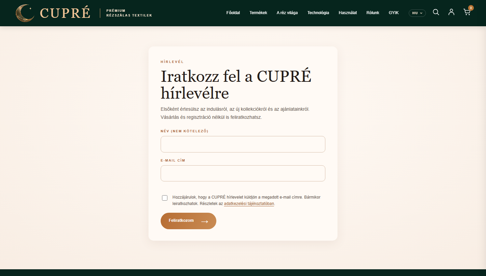
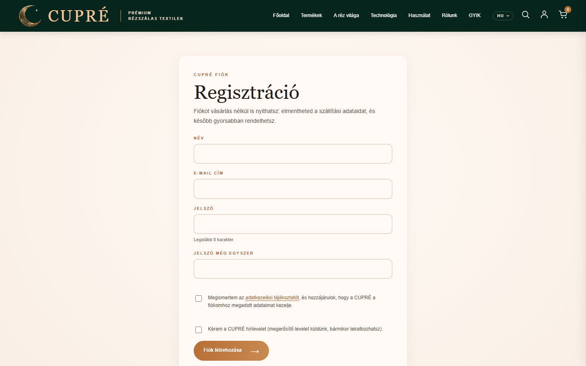
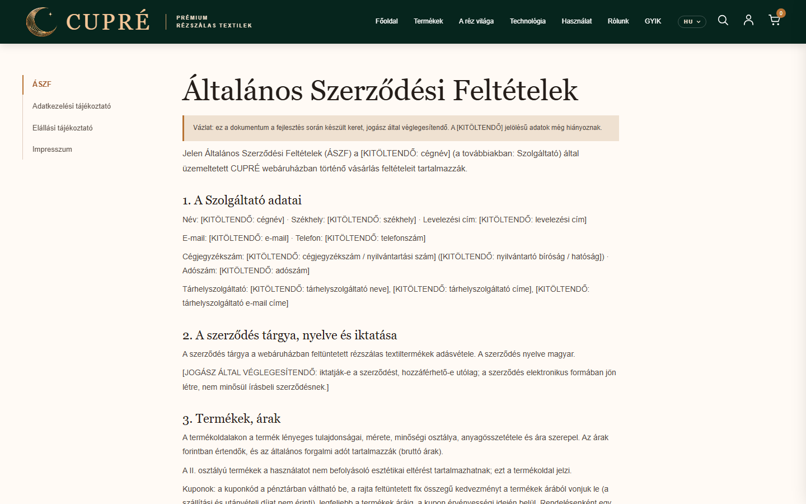

Tartalomjegyzék
- Áttekintés
- Környezetek és indítás
- Bolt-beállítások (company.json)
- Termékek és GYIK
- Nyelvek és szövegek
- Admin felület
- Rendelések kezelése
- Kuponok
- Hírlevél
- Fizetési módok
- Szállítási módok
- Kimenő levelek
- A vásárló szemével
- Jogi oldalak
- Adatok, mentés, biztonság
- Gyakori kérdések, hibaelhárítás
- Élesítési ellenőrzőlista
1. Áttekintés
A CUPRÉ webshop egy Next.js alapú webáruház. A tartalom (termékek, GYIK, cégadatok, szövegek) szerkeszthető adatfájlokban van, a vásárlói adatok, rendelések, kuponok és hírlevél-feliratkozók pedig környezetenként külön SQLite adatbázisban.
| Mit hol talál | Hely |
|---|---|
| Termékek, GYIK, cégadatok | src/data/<környezet>/products.json, faq.json, company.json |
| Felületi szövegek (3 nyelv) | src/data/i18n/hu.json, en.json, de.json |
| Jogi szövegek (3 nyelv) | src/data/legal/hu.json, en.json, de.json |
| Vásárlók, rendelések, kuponok, feliratkozók | src/data/<környezet>/customers.sqlite |
| Kimenő levelek (amíg nincs e-mail-küldés) | src/data/<környezet>/outbox/ |
| Képek | public/images/ |
| Titkos beállítások (jelszó, kulcsok) | .env fájlok – sablon: .env.example |
2. Környezetek és indítás
Három, egymástól teljesen elkülönített környezet van, mindegyik saját adatfájlokkal és adatbázissal:
| Környezet | Parancs | Cím | Adatkönyvtár |
|---|---|---|---|
| Fejlesztés | pnpm dev | http://localhost:3000 | src/data/development/ |
| Teszt | pnpm build:test + pnpm start:test | :3001 | src/data/test/ |
| Éles | pnpm build + pnpm start | :3002 | src/data/production/ |
pnpm build) és újraindítani. Fejlesztési módban a változás azonnal látszik.
Környezeti változók
| Változó | Szerep |
|---|---|
ADMIN_PASSWORD | Az admin felület jelszava (legalább 12 karakter). Ha üres, az admin felület ki van kapcsolva. |
SITE_URL | A webshop nyilvános címe, pl. https://cupre.hu. Kell a levelek linkjeihez, a biztonságos sütikhez és a Barionhoz. |
BARION_POS_KEY, BARION_PAYEE, BARION_ENVIRONMENT | Barion kártyás fizetés: titkos kulcs, pénztárca e-mail, sandbox vagy production. |
3. Bolt-beállítások (company.json)
A src/data/<környezet>/company.json a bolt „vezérlőpultja”. A [KITÖLTENDŐ] jelölésű értékeket élesítés előtt ki kell tölteni.
| Rész | Tartalom |
|---|---|
company | Cégnév, székhely, levelezési cím, e-mail, telefon, cégjegyzékszám, adószám, képviselő – az impresszumban, az ÁSZF-ben és a levelekben jelenik meg. |
hosting | Tárhelyszolgáltató adatai (kötelező az impresszumban). |
conciliationBody | Az illetékes békéltető testület adatai. |
shop.liveOrders | true esetén éles mód: a pénztár gombja „Megrendelés fizetési kötelezettséggel”. |
shop.shipping | Szállítási módok be/ki és díjaik (lásd 11. fejezet). |
shop.payments | Fizetési módok be/ki, bankszámla, utánvételi díj (lásd 10. fejezet). |
shop.legalUpdated | A jogi dokumentumok hatálybalépésének dátuma. |
"shipping": {
"home": { "enabled": true, "feeHuf": 1990, "carrierName": "GLS", "deliveryDays": "2–4" },
"foxpost": { "enabled": true, "feeHuf": 1290, "deliveryDays": "2–3" },
"mplPoint": { "enabled": false, "feeHuf": 1390, "deliveryDays": "2–4" }
}4. Termékek és GYIK
Termékek (products.json)
Minden termék szöveges mezője háromnyelvű ({"hu": …, "en": …, "de": …}); ha bármelyik nyelv hiányzik, a build hibát jelez.
| Mező | Jelentés |
|---|---|
slug | A termékoldal címe: /termekek/<slug>. Egyedinek kell lennie. |
featured | true: ez a termék jelenik meg a főoldal „Kiemelt termékünk” blokkjában. |
name, subtitle, description, points | Név, alcím, leírás, kiemelt jellemzők (ikon + felirat). |
image, imageAlt | Kép a public/images/ mappából és a leíró szöveg. |
variants | Megvásárolható változatok: sku (egyedi cikkszám), size, grade (first = I. osztály, second = II. osztály), priceHuf (bruttó), priceNote. |
productInfo | Kötelező termékadatok: szálösszetétel, kezelés, gyártó, EU-s felelős személy, termékazonosító, biztonsági információk. |

variants, az alsó blokk a productInfo mezőből épül.GYIK (faq.json)
Kérdés–válasz párok három nyelven, opcionális hivatkozással. Ismétlődő kérdést a rendszer nem enged (build hiba).
5. Nyelvek és szövegek
A webshop magyarul a gyökércímen (/, /termekek), angolul /en/…, németül /de/… alatt érhető el. A vásárló a fejléc nyelvválasztójával vált (mobilon a menüben).
A felületi szövegek a src/data/i18n/ szótárakban vannak. A magyar szótár a minta: ha az angolból vagy a németből egy kulcs hiányzik, a build hibát jelez.
6. Admin felület
Az admin oldalak (közös menüvel):
| Oldal | Cím |
|---|---|
| Rendelések | /admin/rendelesek |
| Kuponok | /admin/kuponok |
| Hírlevél-feliratkozók | /admin/hirlevel – itt van a belépő űrlap is |
Belépés: nyissa meg a /admin/hirlevel oldalt, és adja meg az ADMIN_PASSWORD jelszót. A munkamenet 8 óráig érvényes. Túl sok hibás próbálkozás után néhány percig nem lehet belépni.
7. Rendelések kezelése
Lista
A felső fülekkel állapot szerint szűrhet (darabszámmal), a keresőmezőben rendelésszámra, névre vagy e-mail címre kereshet. A CSV letöltése az éppen beállított szűrővel exportál.
Rendelés részletei
Egy sorra kattintva megnyílnak a részletek: vásárló, tételek, szállítás (átvételi ponttal), fizetés (mód, állapot, Barion azonosító, kupon), valamint az állapot- és fizetési napló.
Rendelésállapotok
| Állapot | Mikor használja |
|---|---|
| Beérkezett | Új rendelés (automatikus). |
| Feldolgozás alatt | Összekészítés alatt. |
| Feladva | Átadta a futárnak / automatába. A vásárló értesítő levelet kap; a megjegyzés mezőbe írt szöveg (pl. csomagkövetési szám) a levélben is megjelenik. |
| Teljesítve | A vásárló átvette. |
| Lemondva | Elállás vagy lemondás. (A visszatérítést jelenleg kézzel kell intézni.) |
Fizetés beérkezett
Átutalásos és utánvétes rendelésnél a Fizetés beérkezett gombbal rögzíti a beérkezést; a vásárló értesítést kap. Kártyás fizetésnél ez nem szükséges és nem is lehetséges – az állapotot a Barion adja.
| Fizetési állapot | Jelentés |
|---|---|
| átutalásra vár | Átutalásos rendelés, a pénz még nem érkezett meg. |
| átvételkor fizet | Utánvétes rendelés. |
| folyamatban | Kártyás fizetés elindult, még nincs végeredmény. |
| fizetve | Kifizetett rendelés. |
| sikertelen / megszakítva / lejárt | A kártyás fizetés nem sikerült; a vásárló az eredményoldalról újrapróbálhatja. |
8. Kuponok
A /admin/kuponok oldalon hozhat létre fix összegű kedvezménykuponokat.
| Mező | Jelentés |
|---|---|
| Kód | Legalább 3 karakter (betű, szám, kötőjel). A kis- és nagybetű nem számít. |
| Kedvezmény (Ft) | A termékek árából levont összeg. Legfeljebb a termékek áráig vonódik le; a szállítási és utánvételi díjat nem érinti. |
| Érvényes ettől / eddig | Napra pontos, budapesti idő szerint; a kezdő és a záró nap is beleszámít. Üresen hagyva nincs korlát. |
| Megjegyzés | Belső megjegyzés (pl. kampány neve). |
A listában látja a kupon állapotát (Érvényes / Még nem érvényes / Lejárt / Kikapcsolva) és azt, hányszor használták. Egy rendeléshez egy kupon használható; a rendeléskor a rendszer újra ellenőrzi.
9. Hírlevél
Feliratkozni a /hirlevel oldalon (a főoldali „Értesítést kérek” gomb ide visz), regisztrációkor, a vásárlói fiókban és a pénztárban lehet. A feliratkozás dupla megerősítésű: csak a levélben lévő linkre kattintva lesz aktív.

Az admin oldalon látja a feliratkozókat állapot szerint (Aktív / Megerősítésre vár / Leiratkozott), törölhet, és CSV-t tölthet le a hírlevélküldő szolgáltatóba (alapértelmezésben csak az aktív címekkel).
10. Fizetési módok
A company.json → shop.payments alatt minden mód külön kapcsolható. Ha egyik sincs bekapcsolva, a rendelés fizetési mód nélkül rögzül.
| Mód | Beállítás | Működés |
|---|---|---|
| Bankkártya | card.enabled, card.provider: barion vagy mock | A vásárló a Barion fizetőoldalán fizet, majd visszatér az eredményoldalra. A mock csak fejlesztéshez való tesztoldal (élesben tiltott). |
| Banki átutalás | transfer: számlatulajdonos, bank, számlaszám, IBAN, SWIFT, határidő | A visszaigazolás és a levél tartalmazza a számlaadatokat és a közleményt (CUPRE-<rendelésszám>). |
| Utánvét | cod.enabled, cod.feeHuf | Az utánvételi díj hozzáadódik a végösszeghez. |
BARION_POS_KEY, BARION_PAYEE és https-sel kezdődő SITE_URL kell; ezek nélkül a kártyás mód nem jelenik meg.11. Szállítási módok
| Mód | Működés |
|---|---|
| Házhozszállítás futárral | A megadott címre. A futárcég neve a carrierName mezőben állítható. |
| Foxpost csomagautomata | A vásárló az „Automata kiválasztása” gombbal a Foxpost térképes keresőjében választ; az automata neve, címe és azonosítója a rendeléshez kerül. |
| MPL PostaPont / automata | A vásárló beírja a választott posta / PostaPont / automata nevét és címét. |
A díjat mindig a szerver számolja a beállításból. Átvételi pontos szállításnál a pénztár címmezői a számlázási címet jelentik.
12. Kimenő levelek
| Levél | Mikor megy ki |
|---|---|
| Rendelés visszaigazolása | Minden rendeléskor (tételek, szállítás, fizetési teendők, ÁSZF-link). |
| Fizetés beérkezett | Sikeres kártyás fizetés után, illetve amikor az admin rögzíti a beérkezést. |
| Csomag feladva | Amikor az admin „Feladva” állapotba teszi a rendelést. |
| Hírlevél megerősítése | Feliratkozáskor. |
| Jelszó-visszaállítás | Az „Elfelejtett jelszó” kérésre (1 óráig érvényes link). |
src/data/<környezet>/outbox/ mappába. Az éles e-mail-küldés bekötése élesítés előtti feladat.13. A vásárló szemével
- Termék kiválasztása: a termékoldalon méret és osztály, majd „Kosárba teszem”. A kosár a böngészőben megmarad.
- Pénztár: szállítási adatok, szállítási mód (átvételi pont), fizetési mód, opcionális kuponkód, az ÁSZF elfogadása, opcionális hírlevél.
- Fizetés: kártyánál a Barion oldalán; átutalásnál a megjelenő adatokkal; utánvétnél átvételkor.
- Visszaigazolás: oldalon és e-mailben, a vásárló nyelvén.
Vásárlói fiók
Regisztráció vásárlás nélkül is (/fiok/regisztracio). A „Fiókom” oldalon: szállítási adatok, hírlevél be/ki, rendeléseim (állapottal), jelszócsere, kilépés és a fiók törlése. A pénztár a belépett vásárló adatait előtölti.

14. Jogi oldalak
ÁSZF (/aszf), adatkezelési tájékoztató (/adatvedelem), elállási tájékoztató nyilatkozatmintával (/elallas) és impresszum (/impresszum), mindhárom nyelven; a lábléc minden oldalon linkeli őket.
A szövegek a src/data/legal/<nyelv>.json fájlokban vannak; a {companyName}, {email} stb. helyettesítőket a rendszer a company.json adataival tölti ki.

15. Adatok, mentés, biztonság
- Mentés: rendszeresen mentse a
src/data/production/customers.sqlitefájlt (és acompany.json,products.jsonfájlokat). Az adatbázis egyetlen fájl – a mentés egyszerű másolás (leállított szervernél, vagy az SQLite.backupparanccsal). - Személyes adatok: az adatbázis és az
outboxmappa személyes adatot tartalmaz, ezért nem kerül verziókezelésbe. - Fióktörlés: a vásárló maga törölheti a fiókját; a rendelések a számviteli megőrzés miatt megmaradnak.
- Jelszavak: visszafejthetetlen formában tárolódnak; jelszócsere után minden eszközről kijelentkeztet.
16. Gyakori kérdések, hibaelhárítás
| Jelenség | Teendő |
|---|---|
| Módosítottam a termékeket, de az oldalon nem látszik. | Teszt/éles környezetben újra kell buildelni és indítani (pnpm build, pnpm start). |
| A build hibát jelez egy JSON fájlra. | Hiányzik egy fordítás, duplikált a slug / cikkszám / GYIK-kérdés, vagy hibás a JSON szintaxis. A hibaüzenet megnevezi a fájlt. |
| Nem jelenik meg a kártyás fizetés. | Ellenőrizze a card.enabled értéket, a Barion kulcsokat és a https SITE_URL-t; a mock élesben tiltott. |
| Az admin oldal szerint „nincs bekapcsolva”. | Állítsa be az ADMIN_PASSWORD változót (legalább 12 karakter), majd indítsa újra a szervert. |
| A vásárló nem kapott levelet. | Az e-mail-küldés még nincs bekötve; a levél az outbox mappában található. |
| Egy kupon nem váltható be. | Nézze meg az admin listában: kikapcsolt, lejárt vagy még nem érvényes. |
17. Élesítési ellenőrzőlista
| ✓ | Teendő |
|---|---|
| ☐ | Végleges termékadatok, árak, valódi termékfotók; productInfo kitöltése |
| ☐ | company.json kitöltése (cégadatok, bankszámla, díjak); liveOrders: true |
| ☐ | Jogi szövegek jogászi véglegesítése, a „Vázlat” figyelmeztetés eltávolítása |
| ☐ | Barion szerződés, sandbox teszt, éles kulcsok; Barion logó és Pixel követelményeinek ellenőrzése |
| ☐ | Futár, Foxpost, MPL szerződés; szállítási módok bekapcsolása |
| ☐ | Valódi e-mail-küldés bekötése; számlázó rendszer bekötése |
| ☐ | ADMIN_PASSWORD, SITE_URL beállítása; telepítés HTTPS-sel; adatmentés beállítása |
| ☐ | Próbarendelés minden szállítási és fizetési móddal a teszt környezetben |